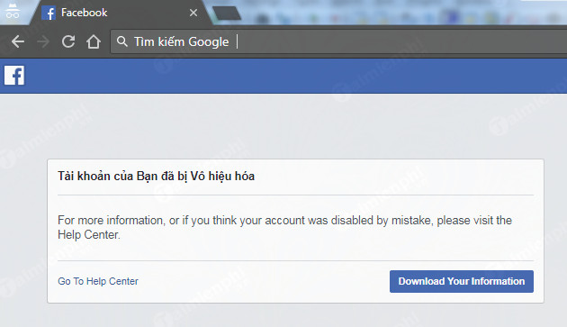

Facebook bị lỗi không vào được: 3 cách khắc phục cực nhanh

Ty Nguyen
CEO ❤️ AhaChat. Love babies & chatbot.
Facebook là mạng xã hội được nhiều người sử dụng nhất hiện nay trên toàn thế giới. Hầu như bất cứ ai cũng có riêng cho mình một tài khoản Facebook để có thể giao lưu kết bạn, cập nhật các thông tin hoặc một số cá nhân, doanh nghiệp dùng Facebook để bán hàng online. Chính vì vậy, khi Facebook bị lỗi ít nhiều gây khó chịu đối với người dùng, đặc biệt là ảnh hưởng khá nhiều đến công việc kinh doanh online qua kênh Facebook của một số cá nhân, doanh nghiệp. Vậy có những lỗi nào không vào được Facebook? Cách khắc phục các lỗi đăng nhập Facebook không vào được ra sao? Bài viết dưới đây sẽ giải đáp các thắc mắc đó của bạn, cùng tìm hiểu nhé!
1. Lỗi đăng nhập Facebook báo tài khoản bị vô hiệu hoá không vào được

Facebook bị lỗi không đăng nhập được vào tài khoản, khi đăng nhập nhận được thông báo tài khoản Facebook của bạn đã bị vô hiệu hoá. Với lỗi này, nếu bạn chỉ cung cấp cho Facebook những thông tin qua loa hời hợt thì chắc chắn tài khoản Facebook của bạn càng khó mở hơn. Với lỗi đăng nhập Facebook như này, đôi khi bạn chỉ cần cung cấp các thông tin mà Facebook yêu cầu một cách chi tiết cẩn thận cũng đủ để tài khoản Facebook của bạn được khôi phục trở lại.
Lỗi đăng nhập Facebook không vào được tài khoản có thể do tài khoản Facebook của bạn đã vi phạm chính sách nào đó của Facebook. Chẳng hạn như vi phạm chính sách quảng cáo, tài khoản bị báo cáo spam, hay có những phần mềm độc hại khi bạn bấm vào các đường link lừa đảo làm tài khoản của bạn bị khóa.
Một số cách khắc phục lỗi không đăng nhập được Facebook, mở khóa tài khoản bị vô hiệu hóa như sau:
- Dùng mã xác nhận Facebook gửi đến số điện thoại hoặc email bạn đã đăng ký trên Facebook (nếu không nhận được mã xác nhận, có thể xem cách khắc phục tại đây).
- Nhận diện hình ảnh bạn bè để xác minh danh tính của tài khoản
- Sử dụng giấy tờ tùy thân như chứng minh thư hoặc bằng lái xe để lấy lại tài khoản facebook.
=>> Xem thêm: Hướng dẫn cách mở khóa tài khoản Facebook bị vô hiệu hóa trong vòng 1 nốt nhạc
2. Facebook bị lỗi không vào được trang cá nhân
Hầu như người dùng Facebook nào cũng đã ít nhiều gặp phải tình trạng Facebook không vào được trang cá nhân. Đây là một tình trạng lỗi Facebook khá phổ biến, đôi lúc khiến người dùng cảm thấy khá khó chịu.
Nguyên nhân của tình trạng này chủ yếu là do đường truyền mạng hoặc lỗi trình duyệt Android hoặc IOS.
Cách khắc phục lỗi Facebook không vào được trang cá nhân như sau:
2.1 Xem xét đường truyền mạng nơi bạn truy cập vào Facebook
Để xem xét đường truyền mạng có ổn định hay không, bạn có thể truy cập vào các website để kiểm tra đường truyền. Nếu đường truyền không ổn định thì bạn chỉ cần chỉnh lại đường truyền sau đó vào lại Facebook xem có vào được trang cá nhân hay không. Nếu vẫn không được bạn có thể khắc phục theo các khác.
2.2 Khắc phục trên thiết bị hệ điều hành IOS (Iphon/ Ipad)
Khắc phục lỗi không vào được trên thiết bị hệ điều hành IOS
Để khắc phục được tình trạng lỗi không vào được Facebook để xem trang cá nhân, bạn có thể làm theo các cách sau:
Cách 1: Tắt các ứng dụng chạy ngầm trong điện thoại của bạn
Cách 2: Xóa ứng dụng Facebook trên điện thoại sau đó tải lại
Cách 3: Đổi sever của đường truyền mạng bằng cách tải ứng dụng SurfEasy VPN để khắc phục server.
2.3 Khắc phục trên thiết bị hệ điều hành Android
Facebook bị lỗi trên thiết bị hệ điều hành Android phải làm thế nào?
Với điện thoại hệ điều hành Android, nếu không vào được trang cá nhân Facebook, bạn có thể khắc phục theo các cách sau:
Cách 1: Khởi động lại điện thoại của bạn
Cách 2: Đăng xuất khỏi tài khoản Facebook sau đó đăng nhập lại
Cách 3: Xóa dữ liệu facebook trên điện thoại
Cách 4: Xóa ứng dụng Facebook trên điện thoại rồi vào CH Play để tải lại
3. Facebook bị lỗi khi đăng nhập và yêu cầu đổi lại mật khẩu
So với 2 loại lỗi trên thì đây là lỗi dễ khắc phục và phổ biến hơn cả. Với lỗi này, khi bạn đăng nhập vào tài khoản Facebook, hệ thống yêu cầu người dùng phải đặt lại mật khẩu mới có thể truy cập vào Facebook và tiếp tục sử dụng.
Nguyên nhân xuất hiện tình trạng Facebook bị lỗi như vậy là do bạn đã đăng nhập tài khoản Facebook bằng nhiều trình duyệt khác nhau. Vì vậy, Facebook có thể coi đây là hành động đáng ngờ nên yêu cầu bạn đổi lại mật khẩu để tránh tài khoản facebook của bạn được đăng nhập ở nơi khác mà không phải chính bạn.
Cách khắc phục tình trạng Facebook bị lỗi không đăng nhập được, yêu cầu đặt lại mật khẩu khá đơn giản. bạn chỉ cần thay đổi lại mật khẩu facebook cho tài khoản đó là có thể truy cập lại vào tài khoản bình thường.
Bài viết trên đây đã giới thiệu đến bạn các lỗi không vào được facebook cũng như cách khắc phục khi facebook bị lỗi.. Bạn có thể lưu lại những thông tin này để tiện lợi trong việc sử dụng tài khoản Facebook. Hoặc nếu bạn có những thắc mắc cần được tư vấn và giải đáp thì đừng ngần ngại mà hãy để lại câu hỏi ở mục bình luận dưới đây, chúng tôi sẽ tư vấn giải đáp cho bạn trong thời gian sớm nhất nhé. Cảm ơn bạn đọc đã theo dõi bài viết của chúng tôi. Chúc bạn thành công!